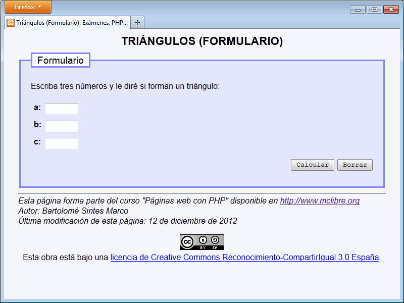
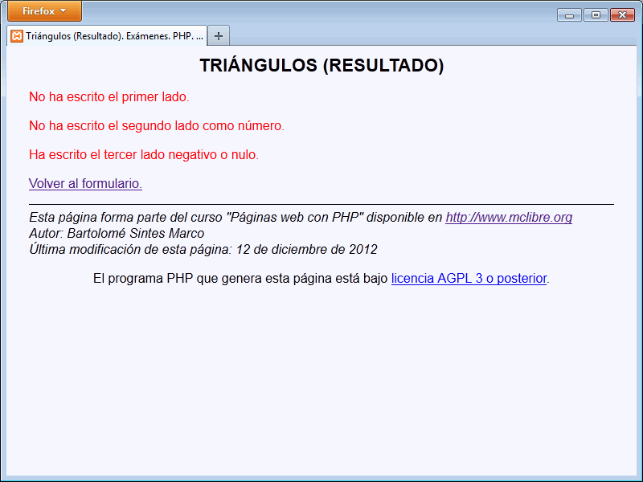
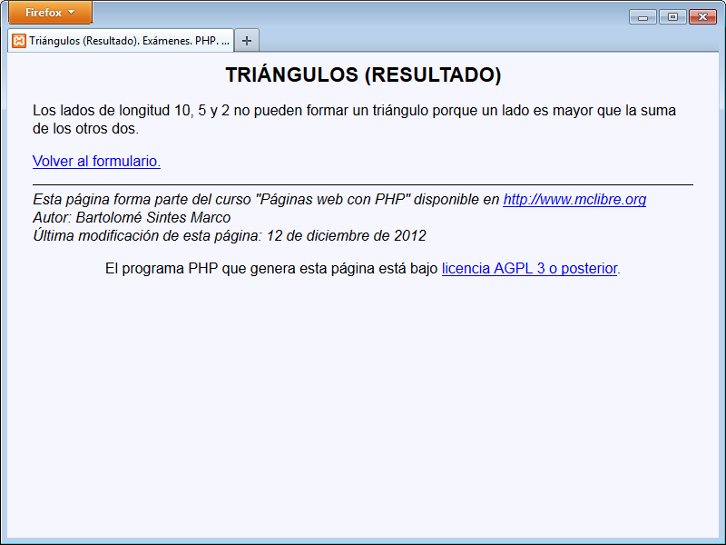
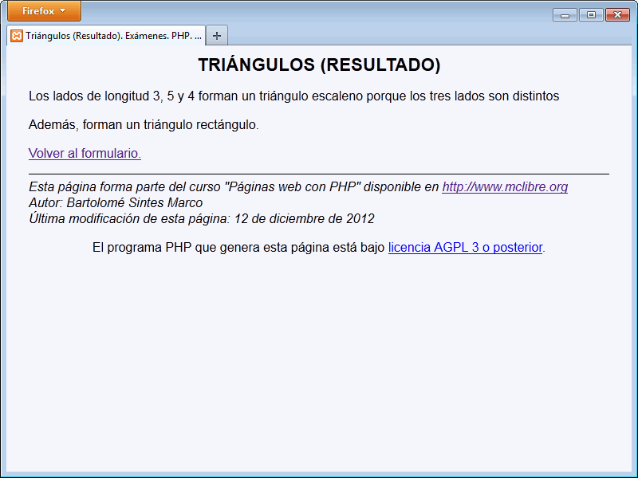

En este ejercicio se debe crear un programa que pida tres números y que diga si forman un triángulo y si forman un triángulo equilátero, isósceles o rectángulo.
Triángulos - Comentarios
El programa tendrá dos páginas:
La primera pide los valores.
La segunda escribe la respuesta
Se deben rellenar todos los campos con valores numéricos mayores que cero.
Ejemplos de triángulos:
un triángulo es rectángulo si el cuadrado de un lado es igual a la suma de cuadrados de los otros lados.
un triángulo es isósceles si sólo dos lados son iguales.
un triángulo es degenerado si un lado es igual a la suma de los otros dos.
un triángulo no se puede formar si un lado es mayor que la suma de los otros dos lados.
un triángulo es equilátero si los tres lados son iguales.
un triángulo es escaleno si no es equilátero ni isósceles.
Capturas:




Triángulos - Ejemplo de programa
Nota: El día del examen los alumnos no tienen acceso a este ejemplo, solamente tienen acceso a las capturas del apartado anterior.
Un ejemplo de programa puede probarse en la ventana siguiente